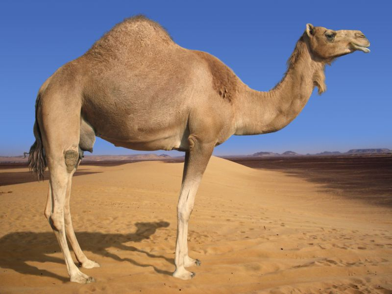

- There are two living species of camel, the Dromedary Camel (has 1 hump) and the Bactrian Camel (has 2 humps)
- Their humps reserve nutritional energy created from rich fat allowing camels to survive long periods of time without eating or drinking.
- Camels have two rows of eyelashes and close their nostrils to protect their eyes and nose from the sand.
- Within a few minutes, a camel can guzzle 40 gallons (152 liters) when it finds a water source.
- Their broad, flat feet have leathery pads and two toes on each foot that assist with walking on sand without sinking.